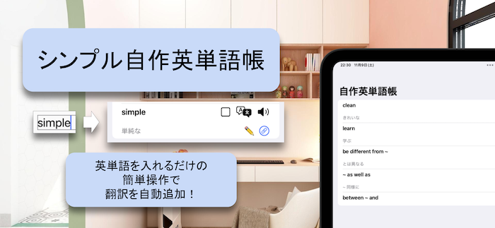

シンプル自作単語帳


自作英単語帳は、英単語を効率よく学習できるシンプルで直感的なアプリです。自分だけの単語帳を作成し、単語の追加や削除、意味の翻訳、発音の確認まで、学習をサポートする多機能が満載です。
【主な機能】
-
単語追加と管理:
新しい単語や連語を簡単に追加できます。単語を一覧で管理し、必要に応じて削除も可能です。
-
発音機能:
英単語の正しい発音を音声で確認できます。発音がわからない単語も、簡単にチェックできます。
-
自動翻訳:
単語の意味を日本語に翻訳。日本語訳を入力しなくても、単語帳を作成できます。
- 編集機能: 自動入力された訳は編集も可能です。
- 効率的な学習: 学習の進行を管理できるチェックリスト機能も搭載。
-
リンク機能:
単語の意味をWebで検索できるリンクボタンを設置。単語の詳細な意味や用法をすぐに調べられます。
あなたの学習をサポートします！英単語の学習をもっと効率的に、もっと楽しく！自作英単語帳で、学びの一歩を踏み出しましょう。
お問い合わせは、 shiba6v (at) gmail.com へお願いいたします。